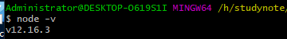
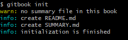

快速使用gitbook
安装
1、下载地址：https://nodejs.org/en/
2、下载完成的样子
3、点击安装，右键安装（一路安装）
在cmd窗口，输入node -v

将会看到版本号！
切换npm源的方法
$ npm install -g nrm 安装
输入nrm ls列出安装源地址
* npm ---- https://registry.npmjs.org
cnpm --- http://r.cnpmjs.org/
taobao -http://registry.npm.taobao.org/
eu ----- http://registry.npmjs.eu/
au ----- http://registry.npmjs.org.au/
sl ----- http://npm.strongloop.com/
nj ----- https://registry.nodejitsu.com/
带*的是当前使用的源，上面的输出表明当前源是官方源。
$ nrm use taobao
Registry has beensetto: http://registry.npm.taobao.org/
使用淘宝安装源
nrm最常用的命令
1.nrm ls 查看已有的源
2.nrm add <源名称> <源地址> 新增源
3.nrm use <源名称>切换到现有的源
4.nrm test 测速
4、安装GItBook，命令行输入下述命令
管理员身份运行CMD
npm install gitbook-cli -g
#如果是mac系统linux安装出错可能需要权限执行以下代码
sudo npm install gitbook-cli -g
安装速度有点慢，需要等一会儿！安装示例图：
5、查看是否安装成功，命令行输入下述命令，出现版本号则已安装，否则无
gitbook -V(注意这里的v是大写)
安装此时安装CLI版本，安装完的样子为
GitBook创建以及预览使用
一、gitbook init
1、进入到指定的文件夹执行cmd命令，初始化文件夹，会自动生成两个必要的文件README.md和SUMMARY.md

- README.md:书的介绍文字，如前言，简介，在章节中也可作为章节的简介
- SUMMARY.md：定制书籍的章节结构和顺序。
2、在gitbook的使用文件夹下面增加其他章节的文件，文件目录如下：
3、GitBook使用SUMMARY.md文件作为书记的目录结构，可以用来制作书籍目录。
4、预览
a、执行命令git server,gitbook会启动一个4000端口用于预览
b、第二种预览方式，运行gitbook build命令狗会在书籍文件夹中生成一个_book文件夹的内容即为生成的html文件，生成网页不需要开启服务器。
注意：
当执行gitbook serve后保存找不到fontsettings.js
一般的降低版本
其他解决办法：先执行一次gitbook build,在执行gitbook serve就不会报错了！
安装插件
安装插件只需要在书籍目录下增加book.json文件，例如增加折叠目录的插件，需要在book.json内增加下面代码：
{
"plugins": ["expandable-chapters-small"],
"pluginsConfig": {
"expandable-chapters-small":{}
}
}
//常用插件
{
"plugins": [
"back-to-top-button",//回到顶部插件
"expandable-chapters",//目录扩展，还可以
"splitter"//安装的时候次软件没有安装成功
"-lunr", "-search", "search-pro",//这3个支持中文搜索
]
}
然后终端执行install来安装插件即可。
gitbook install
常见问题
1、gitbook渲染的时候出现错误 template。比如在渲染django模板的时候 出现问题？
解决办法：在代码的最前面和最后面添加代码区域
2、如何将文档上传到coding？
解决办法：
3、gitbook新版本"gitbook build"命令导出的html本地不能跳转的问题解决
解决办法：在导出的文件夹目录下找到gitbook->theme.js文件
- 找到下面的代码（搜索
if(m)for(n.handler&&） - 将if(m)改成if(false)